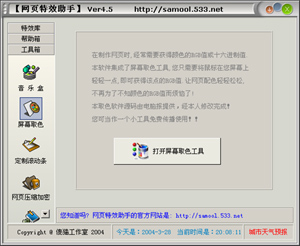
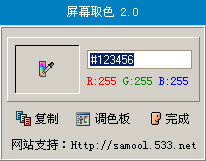

|
屏幕取色 |
|
| |
在制作网页时,经常需要获得颜色的RGB值或十六进制值.
本软件集成了屏幕取色工具,您只需要将鼠标在您屏幕上
轻轻一点,即可获得该点的RGB值.让网页配色轻轻松松,
不再为了不知颜色的RGB值而烦恼了!
本取色软件源码由电脑报提供，经本人修改完成！
您可当作一个小工具免费传播使用！！
点击【打开屏幕取色工具】,即可打开屏幕取色工具。

打开【屏幕取色】后，点击一下【取色笔】，即可开始取色。
【复制】按钮可以将颜色的十六进制代码复制到剪贴板中。
【调色板】可以选择预定的色彩。
点击【完成】按钮即退出《屏幕取色》。
 |
|
|
| 傻猫制作 2003-3-28 |
|